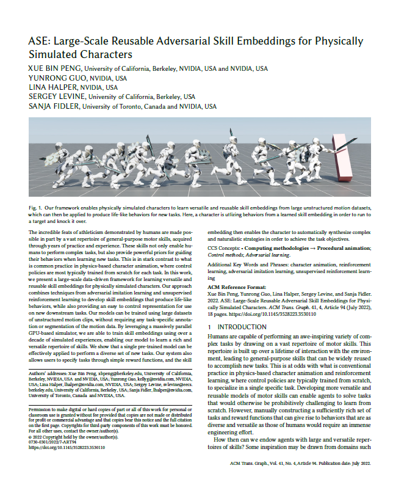

|
|
|
|
|
|
|
|
|
|
|
SIGGRAPH 2022
|
Our framework enables physically simulated characters to learn versatile and reusable skill embeddings from large unstructured motion datasets, which can then be applied to produce life-like behaviors for new tasks. Here, a character is utlizing behaviors from a learned skill embedding in order to run to a target and knock it over. |
The incredible feats of athleticism demonstrated by humans are made possible in part by a vast repertoire of general-purpose motor skills, acquired through years of practice and experience. These skills not only enable humans to perform complex tasks, but also provide powerful priors for guiding their behaviors when learning new tasks. This is in stark contrast to what is common practice in physics-based character animation, where control policies are most typically trained from scratch for each task. In this work, we present a large-scale data-driven framework for learning versatile and reusable skill embeddings for physically simulated characters. Our approach combines techniques from adversarial imitation learning and unsupervised reinforcement learning to develop skill embeddings that produce life-like behaviors, while also providing an easy to control representation for use on new downstream tasks. Our models can be trained using large datasets of unstructured motion clips, without requiring any task-specific annotation or segmentation of the motion data. By leveraging a massively parallel GPU-based simulator, we are able to train skill embeddings using over a decade of simulated experiences, enabling our model to learn a rich and versatile repertoire of skills. We show that a single pre-trained model can be effectively applied to perform a diverse set of new tasks. Our system also allows users to specify tasks through simple reward functions, and the skill embedding then enables the character to automatically synthesize complex and naturalistic strategies in order to achieve the task objectives.
|  | ASE: Large-Scale Reusable Adversarial Skill Embeddings for Physically Simulated Characters Xue Bin Peng, Yunrong Guo, Lina Halper Sergey Levine, Sanja Fidler Transactions on Graphics (Proc. ACM SIGGRAPH 2022) [Paper] For feedback and questions please reach out to Xue Bin Peng. |
|||
If you find this work useful for your research, please consider citing it as:
@article{
2022-TOG-ASE,
author = {Peng, Xue Bin and Guo, Yunrong and Halper, Lina and Levine, Sergey and Fidler, Sanja},
title = {ASE: Large-scale Reusable Adversarial Skill Embeddings for Physically Simulated Characters},
journal = {ACM Trans. Graph.},
issue_date = {August 2022},
volume = {41},
number = {4},
month = jul,
year = {2022},
articleno = {94},
publisher = {ACM},
address = {New York, NY, USA},
keywords = {motion control, physics-based character animation, reinforcement learning}
}